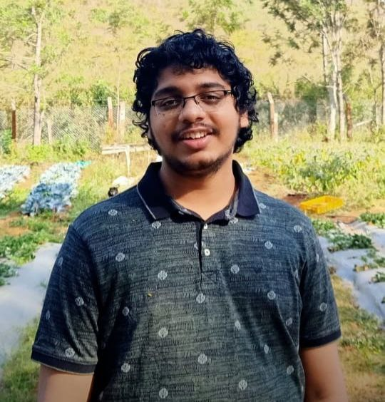

Integrated PhD Student
Theoretical & Computational Chemistry
TIFR Hyderabad, India
My research interests span Theoretical Chemistry, Computational Chemistry, and Topological Chemistry . My work primarily focuses on understanding complex electronic phenomena in materials and catalytic systems through advanced first-principles methodologies.
From foundational applications of Density Functional Theory (DFT) in catalysis to advanced investigations involving spin polarisation, spin-orbit coupling, and valleytronics during my master's in chemistry at TIFR Hyderabad, India, I have extensively employed VASP for electronic-structure calculations across a broad range of condensed matter and materials science problems. To understand the behaviour of electronic structure in molecules, I have mainly used Gaussian and ORCA to explore the underlying phenomenon and pathways in organometallics and metalloenzyme biomimetics.
My research predominantly focuses on properties governed by surface interactions and electronic structures, with particular emphasis on slab and surface calculations that are central to low-dimensional systems, catalytic interfaces, and quantum materials. More recently, my interests have evolved toward excited-state and many-body methodologies, especially GW and Bethe-Salpeter Equation (BSE) calculations for investigating excitonic phenomena and quasiparticle effects in complex materials.
On the other hand, I have simultaneously emphasised metalloenzymatic biomimetics (mainly focusing on high-valent metal oxo complexes) and understanding their role in non-heme ligands with different metal centres, and further emphasis is on understanding the role of explicit solvation in understanding the rate of reactions, which might need QM/MM calculations, giving a niche with molecular dynamics (MD) simulations.
Beyond applying existing methodologies, I am deeply interested in the computational implementations and numerical foundations underlying modern electronic-structure theory. I actively seek to understand the developer-level aspects of frameworks such as VASP and aim to explore them particularly for many-body perturbation theory workflows. My broader scientific vision involves developing advanced computational strategies for heterogeneous catalysis, topological-material catalysis, finite-temperature DFT using density functional embedding techniques (DFET) for surface-induced quantum phenomena and plasmonic catalysis, where precise control over electronic excitations and many-body effects becomes essential.
With extensive experience in slabs, surfaces, spin-orbit-coupled systems, and electronic-structure analysis in molecules and solids, I aim to bridge the gap between theoretical concepts, computational implementations, and practical materials applications. I strongly believe that collaborative interactions among developers, theorists, and computational scientists, along with experimental groups, are vital for advancing next-generation materials modelling methodologies. "A computational chemist is more successful if they are always trying to go as close as experiments to understand the phenomenon", my advisor has always emphasised this, and I ensure this is followed.